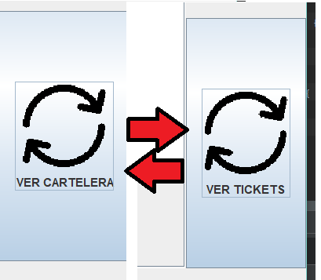

En el menú principal, por defecto aparecerá la tabla de TICKET'S:
Se puede hacer clic en el botón "VER CARTELERA" para poder visualizar el listado de Películas en ESTRENO próximamente
Si queremos volver a ver la tabla de TICKET's haremos de nuevo clic en el mismo botón, que ahora tiene texto distinto: ("VER TICKETS")
Se pueden redimensionar las columnas en la tabla. Para ello, simplemente posiciona el ratón hacia uno de los separadores de la columna deseada: haz clic, mantén y arrastra para aumentar o disminuir el tamaño en horizontal de la columna:

Simplemente será cuestión de hacer DOBLE CLIC sobre la foto de perfil, y seleccionar la foto deseada.

Cuando hagamos clic en el botón de Cambio de Tabla, los botones de AGREGAR/ELIMINAR cambiarán su cometido, dependiendo de si tenemos habilitada la tabla de